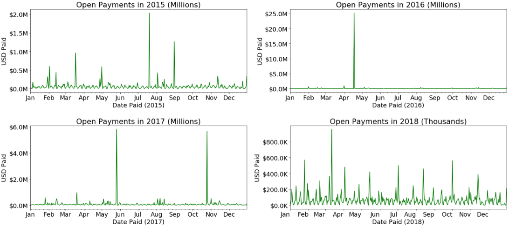
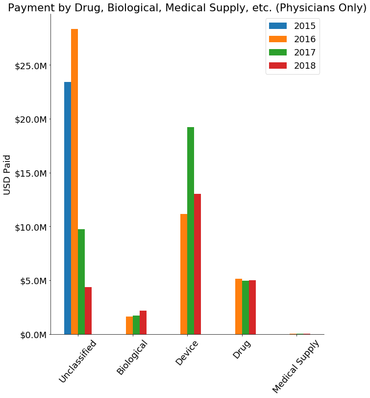

Results
Below highlights a data driven journey through the open payments dataset for Wisconsin. After carefully reading along, we will begin to uncover who is receiving corporate payouts from medical companies, what are they receiving millions of dollars for, and can I trust my physician? Although we are limited by the data, after reading you will be armed with powerful questions that people in the medical field may not want you to ask.
How do total daily payments vary in Wisconsin 2015-2018?
2015, 2016, and 2017 had four total daily payments greater than $1.5M. There was one daily payout total for $25M which dwarfs the median payout of $16,580 across the years. 2018 did not have the outrageous payouts as the other years. In 2018 most days had total payments for less than $100K, however there appears to be some pattern of +$400K payouts every other month.
Corporations are paying a lot of money daily to teaching hospital and physicians. This means that teaching hospitals and physicians are key stakeholders for corporate medical companies. But where is the money going and for what reasons? And what is going on with enormous payment dates?
What is the trend for the number of daily payments in Wisconsin?

There is a very weak correlation between day's since 1/1/2015 and the number of payments made. linear trend line captured with an intercept of 252.5 and a slope of -.9417. The interpretation is that if you move forward one day, you should expect about 1 less payment for Wisconsin. There is a noticeable horizontal gap in the scatter plot; there are few days with over 100 and under 200 daily payments.
This means that when medical companies write checks, they tend to write a lot at once.
How have the number of daily payments in Wisconsin progressed over time?
In each year there is a trough of max total daily payments between 175 to 250 days into the year. This corresponds to mid-June through September 6th. These dates perfectly overlap with summer vacation for K-12 schools. The trough is consistently 20% below the max number of payments made in Spring, Fall, and Winter (aside from the Winter holiday).
The plot shows that responsiveness of daily payments made stayed relatively constant between 2015 and 2018. The sensitivity to typical times that families take vacations and firm productivity falls speaks to the validity of the data.
Where is the money going?

Across the four-year, Physicians have received over 30X compared to teaching hospitals. Physicians have received $129,968,000 while teaching hospitals received only $3,805,000.
To us, this was mind-blowing. The University of Wisconsin Hospital, Children's Hospital, and Froedtert Hospital are just a few examples of teaching hospitals. These hospitals are enormous, and we would have expected corporations to write bigger checks to these institutions. Of course, there are far fewer teaching hospitals than physicians, but it we still would have expected more money to be going to teaching institutions. Are the physician’s receiving payments mainly from highly populated cities in Wisconsin?
Where are the physicians receiving money from corporations located?

There are three dominating clusters of data in the southeast corner of Wisconsin. Moreover, 71% of the physicians are located in the southern-half of Wisconsin. As you move north, there are less physician's receiving payments from medical companies.
Results of this plot reflect population densities of the state. The largest cluster in Milwaukee, and other two clusters in Madison and Green Bay. As you move northwest the state becomes quite rural. The big take-away is that payments being made to physicians reflect population density. Even if you live in Baraboo, WI your physician might be receiving checks from medical companies.
How are the physician's getting paid?

Cash is king, and physician’s are receiving a lot of it. 97% of payments to physicians are cash, while only 3% are for in-kind items or services values are notably similar at $4.1M. The cash payouts are not consistent across the years; there is about a $23M difference from 2016 to 2015 and 2018. No physicians have received dividends or stocks, and only a sliver of payment in the form of options/ownership interest occurred in 2015.
In kind items/services are donations in the form of labor, tools, or services of some kind. Although this is a small amount compared to cash, $4.1M each year is still a lot of money and it would be interesting to know what exactly companies are "donating" to physicians. It is re-assuring that since 2015 not a single physician has received dividends, stock, or options/ownerships because they would signal a larger conflict of interest compared to cash. However, we still have the elephant in the room. Why are physicians receiving massive (cash) payments?
What are the payments going to physicians classified as?
Between the four years 51% of all the payments to physicians were unclassified. However, since 2016 there has been an 80% drop in payments being unclassified. In 2017 and 2018 payments categorized as devices surpassed biological by about 7X, and drug by about 2.5X.
The 80% decrease in unclassified payment types is great, however the 80% decline amounted for roughly $19M. There was not an aggregated $18M increase in the following categories which is curious? Moreover, It is interesting that only thousands of dollars were assigned to the medical supply category. Is there another way to more accurately depict what the physicians are receiving the money for?
What are the payments for?
In 2016 there was $30M paid for service compensation. Consulting fees have steadily increased by 39% from 2015 to 2018. Royalty or license has been consistent at $7.5M besides a $15M royalty/license payout year in 2017. Food, beverage, travel, and lodging has been constant across the years between $2M-$3M.
Distinguishing consulting fees from service compensation questions what "service compensation" really means. If I am a physician and I sell company XYZ's special drug/device and I get kick-back for it, is that considered service compensation? If so, that raises startling questions about the judgement of our physicians. Unfortunately, without better information, we have reached a dead-end on this front. In a similar light, one could raise the same questions about the royalty/license category. What do physicians do to receive license or royalty checks, and is it ethical? Let us explore more about the types of physician specialties.
.What types of physicians are receiving the most money?

The top four physician specialties have taken home between 33%-56.5% of the total. However, the top categories change year-to-year. Only Orthopedic Surgery was in the top 4 each year. Female reconstructive surgery and emergency medicine had surprising dominating appearances in 2017 and 2016 respectively.
Orthopedics involves the muscles and joints which makes sense why this specialty consistently attracts a lot of money from corporations. It is funny to see a massive serge of money going to female reconstructive physicians in Wisconsin after face-lifts, bow-tox, and plastic surgery went mainstream. But what category is the money mainly going towards: drugs, devices, supplies?
What does the payout data look like over time for the overall top 4 physician specialties?

The Wisconsin orthopedic surgery physician's received a total of 11,201 payments across the data where the median pay was $69.23, average was $1,407, and the max is $203,607. Emergency medicine physician's received a total of 1,935 payments where the median pay was $23, $7,786 average, and a max of $12.1M. There were 311 payments for radiology physicians, median payment of $115, average of $29,235 and a max of $8.5M. Finally, reconstructive physicians receive only 185 payments with a median of $60, average of $34,762, and a max of $5.75M.
The number of payments being made to a category of physicians is a proxy for the effects of supply and demand. As you move from orthopedic physician down to reconstructive physicians you lower the number of checks received, however the average payment increases consistently from about $1,400, $7,700, $29,000, $34,700. If you are aspiring to be a physician and indifferent about your field of specialty, consider the risk-reward trade-offs.
Conclusion
Limited by the data available in the data set we cannot conclude directly if you can or can't trust your physician. However, it would be in your best interest to ask some hard questions. I would start with, "Do you receive any compensation from any biomedical, drug, or medical device companies?" Even if you live in Baraboo, WI and your physician says no, you do know that physicians in Baraboo are receiving some money. Use this information to dig deeper and see the bigger picture because I hope we can all confidently say we trust our physicians after analyzing these results.